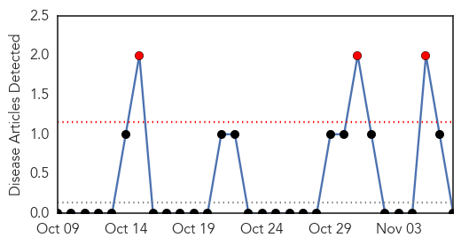
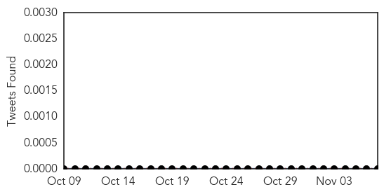
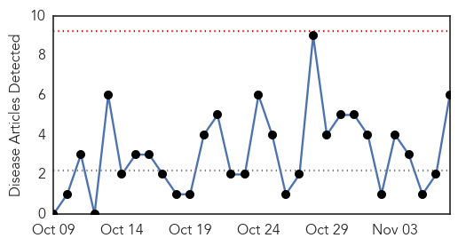
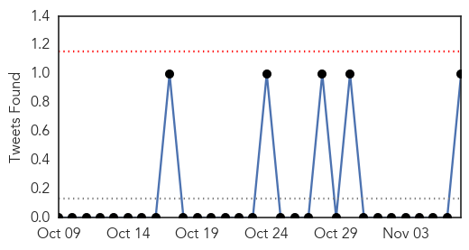
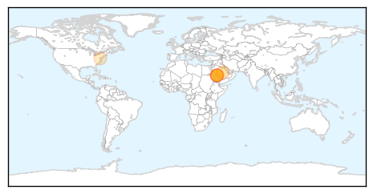
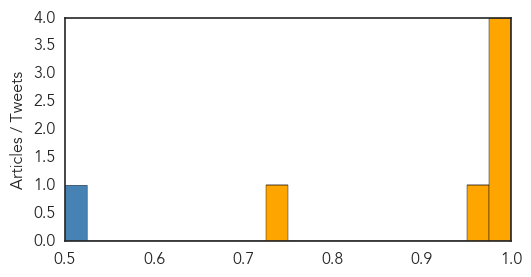

Mold/Fungal
30-Day Web Trend
3 alerts, 0 warnings

30-Day Twitter Trend
0 alerts, 0 warnings

Article Locations

Article Confidences

Top Articles:
-
No articles found for Nov 07, 2014
Top Tweets:
-
No tweets found for Nov 07, 2014
MERS
30-Day Web Trend
0 alerts, 0 warnings

30-Day Twitter Trend
0 alerts, 0 warnings

Article Locations
Article Confidences
Top Articles:
- 0.999
- WHO: 12 New Cases Of MERS-CoV Infection Reported In Saudi Arabia
- 0.999
- News Scan for Nov 07, 2014
- 0.996
- Saudi- 'MERS is active requires full alert'
- 0.994
- 'MERS is active, requires full alert'Healthcare
- 0.971
- Ministry monitoring coronavirus casesHealthcare
- 0.739
- How a tilt toward safety stopped a scientist's virus research
Top Tweets:
- 0.506
- RT: 12 Cases of MERS-CoV in Saudi Arabia are Reported to http://t.co/d4CCnweSMW